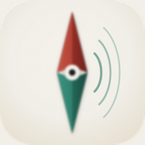

Meridian ReaderEffective date: 23 October 2026 · Last updated: 23 October 2026
Meridian Reader is published by Jimmy Yao. This policy describes the iOS app
Meridian Reader (bundle ID com.jimmyyao.Reader)
and this small public website used for App Store privacy and support links.
This policy covers the Meridian Reader app on iPhone and these GitHub Pages. It does not cover third-party websites you open in Browse, model hosts you download from, or other apps. Those services have their own policies.
Meridian Reader keeps app data on your device only, including:
That data is not uploaded to a Meridian server. We do not operate a Meridian cloud account for the app.
Apple may collect standard App Store and operating-system diagnostics under Apple’s own policies when you use iOS or the App Store. That is outside Meridian Reader’s control.
Browse uses Apple’s WebKit (WKWebView) to load pages you choose.
When you visit a site, that site and its network (and any scripts or trackers the page includes)
may receive the same kinds of information a normal browser visit would: your IP address,
device or browser details, cookies the site sets, and the page address.
Meridian Reader does not insert Meridian analytics into those pages.
Optional “Block Ads” uses on-device content-blocking rules to reduce some ads and trackers
on pages loaded after you turn it on.
On-device voices need model files. When you choose to download a voice or engine pack, the app fetches those files from the model host configured for that engine (for example a public model repository) over the network, then stores them in the app’s on-device storage (Application Support). Download happens only when you start it. Speech synthesis itself runs locally on your iPhone after the model is present.
Safari Share and Files Open In can send a URL, PDF, or EPUB into Meridian Reader. The Share extension writes a short payload into a shared App Group container on your iPhone so the main app can open it. That handoff stays on the device. It is not sent to Meridian servers.
If you tap the microphone in the Browse address bar, Meridian Reader may use the microphone and speech recognition so you can dictate a search or address. Recognition prefers on-device processing when your language supports it. Dictation is only for that address-bar control. The app does not record listening sessions or upload your library audio for recognition.
These privacy and support pages are hosted on GitHub Pages. GitHub may process standard web server logs (such as IP address and user agent) to operate the host. See the GitHub Privacy Statement. This site does not set Meridian analytics cookies.
Meridian Reader is not directed at children under 13. We do not knowingly collect personal information from children through a Meridian service. Because Browse can open the open web, a guardian should decide whether the app is appropriate.
If the app’s data practices change, this page will be updated and the “Last updated” date will change. Material changes will be reflected here before or when the app behavior ships.
For privacy questions about Meridian Reader, open an issue on the public repository: github.com/haowjy/meridian-reader/issues.